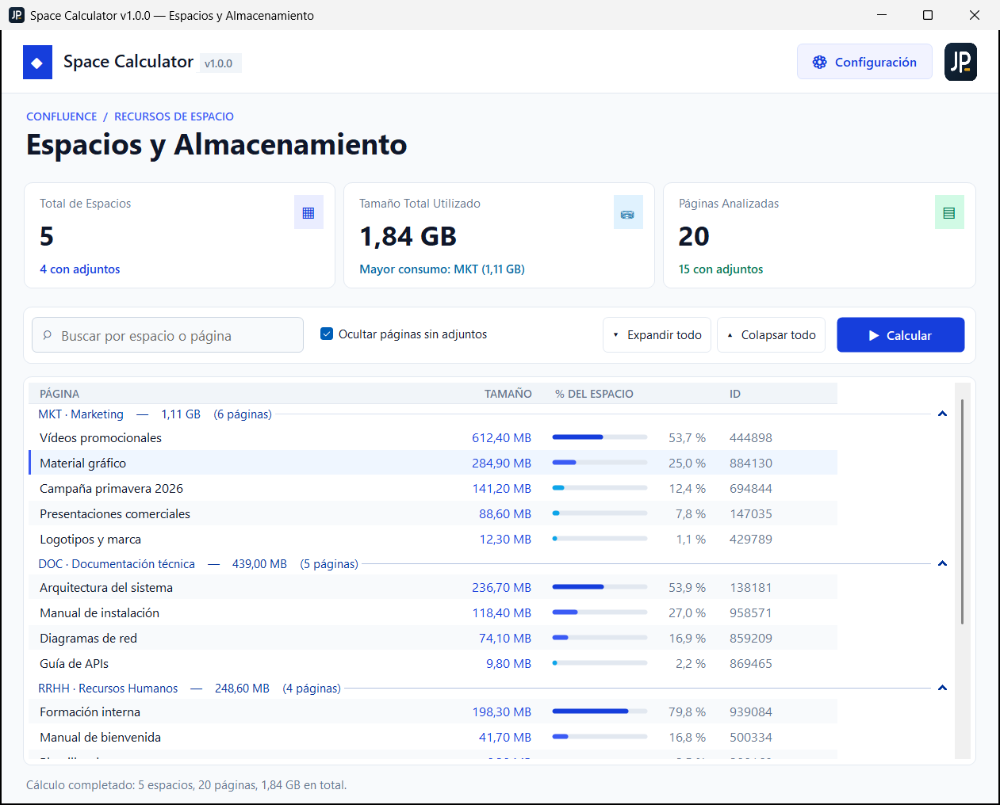

Space Calculator
v1.0.0Calcula cuánto espacio ocupan los adjuntos de tus espacios y páginas de Confluence, sin modificar nada.
Descargar Space CalculatorManual de usuario (PDF)

Ficha
- Versión
- 1.0.0
- Plataforma
- Windows 10 y 11 · requiere .NET 10 Desktop Runtime
- Descarga
- GitHub Releases
- Manual
- Manual de usuario v1.0.0 · PDF, 13 páginas, noviembre 2026
Qué hace
- Almacenamiento por espacio y página: se conecta a Confluence y calcula cuánto ocupan los adjuntos, con porcentaje sobre el espacio.
- Búsqueda y filtros: busca por espacio o página, oculta las páginas sin adjuntos y expande o colapsa todo.
- Solo lectura: consulta Confluence sin modificar ni borrar nada.
- Conexión segura: usa un token de API de Atlassian, que se guarda cifrado para tu usuario de Windows.
Límites de la versión 1.0.0: hasta 200 espacios, 200 páginas por espacio y 200 adjuntos por página.
Registro de cambios
- v1.0.0Noviembre 2026
- Primera versión pública.